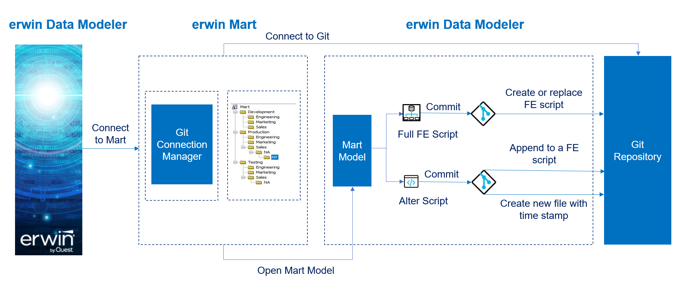

Starting erwin Data Modeler (DM) 12.1, you can connect erwin DM to Git repositories via Mart Server. This enables you to push Forward Engineering (FE) scripts for a Mart Model to GitLab or GitHub. You cannot store FE scripts or DDL on a Mart Server but only erwin models. With Git support you can adopt DevOps principles as you can commit FE scripts in Git repositories. Working with these repositories help you in:
Pushing FE scripts to a Git repository involves:
To summarize, following is the workflow to commit FE scripts.

Once you are connected to a Git repository, you can commit FE scripts.